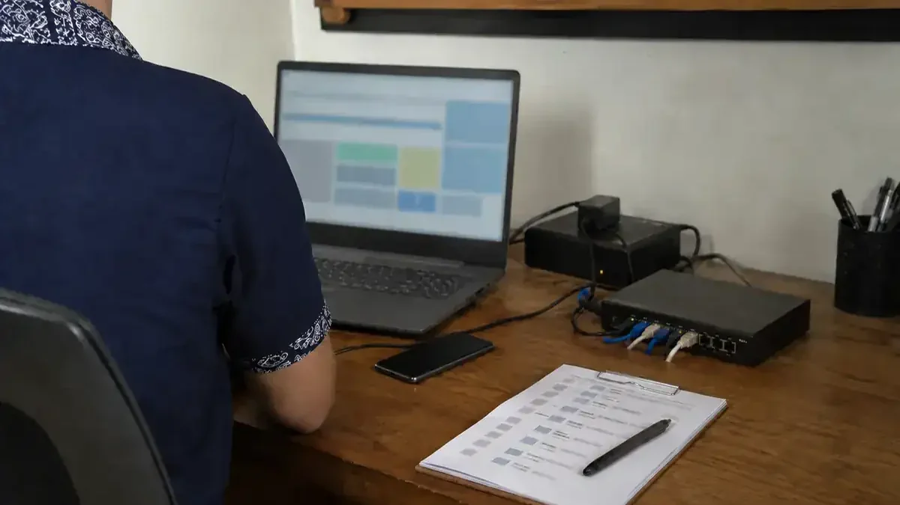

Parfum
Cara Menyusun Ringkasan Preferensi Parfum yang Jelas
Ubah preferensi yang abstrak menjadi informasi yang dapat digunakan dalam konsultasi.
Berita & Wawasan
Baca laporan perusahaan dan arsip ringkasan dengan atribusi penerbit asal. Untuk panduan praktis, kunjungi Pusat Pengetahuan.
Pilih dengan lebih paham
Bandingkan kebutuhan, biaya, dan langkah praktis sebelum menentukan pilihan.
Wawasan PT DIRAC INOVASI NUSANTARA
Temukan artikel tentang parfum, domain, website, keamanan digital, pembayaran, dan layanan usaha. Gunakan pencarian dan kategori untuk menemukan bacaan yang sesuai.
Pilih bacaan sesuai kebutuhan. Rincian produk dan ketentuan layanan tetap mengikuti informasi yang ditampilkan saat digunakan.
Pilihan bacaan
Tiga bacaan pengantar untuk merangkum preferensi parfum, memilih nama domain, dan menyusun brief website.
Parfum
Ubah preferensi yang abstrak menjadi informasi yang dapat digunakan dalam konsultasi.
Domain
Uji keterbacaan, konteks, penggunaan, dan risiko sebelum memilih sebuah nama.
Website
Susun tujuan, pengguna, konten, fitur, dan batas proyek sebelum membicarakan desain.
Coba kata kunci lain atau hapus filter.

Prinsip editorial
Setiap keputusan produk, domain, atau proyek tetap memerlukan pemeriksaan informasi yang berlaku saat proses berlangsung.
Indeks lengkap
Judul, ringkasan, tanggal, atribusi, dan tautan tersedia dalam indeks ini. Ringkasan lama mempertahankan sumber asal; laporan perusahaan menggunakan informasi internal.